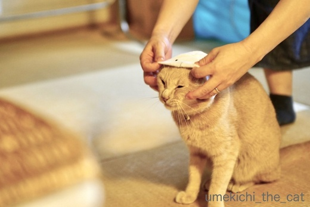
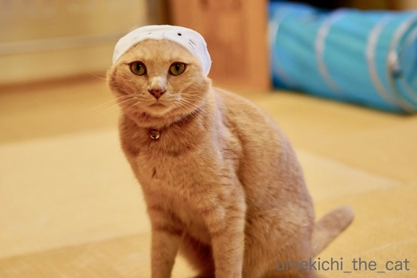
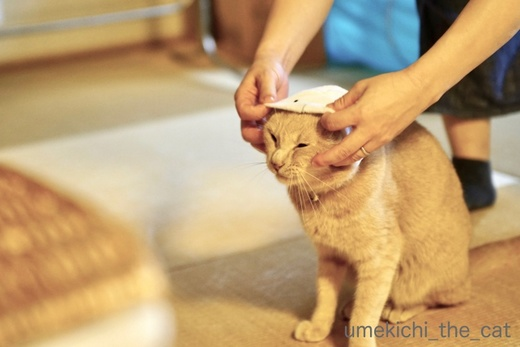
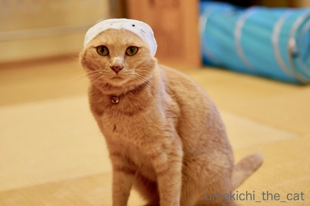

旅姿☆あざらしくん [梅吉]
関西は昨日梅雨入り。蒸し蒸しして来ました。
ここはひとつ梅吉さんには涼しげに海獣さんになっていただきましょう＾＾

おとーさんが嬉しそうに買って来ましたよ。
かぶってマリンあにまる あざらしくん ですってーＯ(≧▽≦)Ｏ

ささ、被ってみましょう！
まあ、そう迷惑そうな顔をせずに、ね？

急いで被せたので後ろに背負って目が釣り上がっちゃいました。
決して怒っているわけではないと・・・

これでどうでしょうか。
似合う似合わないは別にしてあざらし感は１ミリもありません(^▽^;)
おかーさんは江戸時代の道中手拭い（道中手拭いって何の方？八兵衛が被っているこれ）を被った
旅人に見えるのですが・・・

そうそう！いいねー(๑˃̵ᴗ˂̵)و
なにわっこだけど鯔背だねー！！！
 ↑ガブッと一押し↑
↑ガブッと一押し↑
近所の神社に最近出没する猫。
奉納された酒樽の上で朝からぐーすか。
一晩中呑んでたのでしょうか(〃ω〃)
ここはひとつ梅吉さんには涼しげに海獣さんになっていただきましょう＾＾

おとーさんが嬉しそうに買って来ましたよ。
かぶってマリンあにまる あざらしくん ですってーＯ(≧▽≦)Ｏ

ささ、被ってみましょう！
まあ、そう迷惑そうな顔をせずに、ね？

急いで被せたので後ろに背負って目が釣り上がっちゃいました。
決して怒っているわけではないと・・・

これでどうでしょうか。
似合う似合わないは別にしてあざらし感は１ミリもありません(^▽^;)
おかーさんは江戸時代の道中手拭い（道中手拭いって何の方？八兵衛が被っているこれ）を被った
旅人に見えるのですが・・・

そうそう！いいねー(๑˃̵ᴗ˂̵)و
なにわっこだけど鯔背だねー！！！
近所の神社に最近出没する猫。
奉納された酒樽の上で朝からぐーすか。
一晩中呑んでたのでしょうか(〃ω〃)

カフェオレ色の梅吉

梅吉 2023年8月10日 永眠


梅吉と出会った譲渡会

犬猫の理由なき殺処分ゼロ
妄想広告
UMEKICHI 光

爆発的に早い！
時々攻撃的！
Thanks to Mr.Boss365
爆発的に早い！
時々攻撃的！
Thanks to Mr.Boss365

キャー！！！可愛い～(*‘∀‘)
確かにアザラシには・・・・見えませんね（笑
キリっとしたお顔はまさに鯔背ですね♪
by きぃ (2018-06-07 15:10)
そうね（笑）
アザラシじゃなくて、わたしも時代劇に出てくる雰囲気だわって思っちゃった（笑）
でもちゃんとかぶって、カメラ目線で写真を撮らせてくれるのは
さすがよお、梅吉君！！
イケニャンぶりは健在よっ
by リュカ (2018-06-07 15:11)
私は給食のおばさんかと思っちゃいました(ゴメン) 赤富士の前に立つといなせなおにーさんそのものです(ちがうアザラシだって)猫をアザラシにするなら胴体が入る袋も必要ですね。梅吉さんがいくら性格の良い子でもそこまでの協力は無理かな~。
by zombiekong (2018-06-07 15:23)
あざらしくん？
きりっと目が釣り上がって、競泳選手かと‥
わ、旅姿、似合う～さすが！ 赤富士最高です＾＾
あざらしの赤ちゃんって目がポイントでは‥目隠ししてもいいって猫はあんまりいないでしょうね＾＾；
by sana (2018-06-07 15:47)
こんにちは。
梅吉！！最高！！
あざらしくんと言うよりもzombiekongさんと同じく「給食のおばさん」？または、「ラガーマン」？
凱風快晴（赤富士）似合っています。梅吉ちゃん・・・少し舌出てますか？葛飾北斎もお手上げだぞ！！(=^･ｪ･^=)
by Boss365 (2018-06-07 16:18)
背景は富士山でしょうか。
木枯らし紋次郎のような旅人さんにみえてしまいまし。
梅吉さん、粋ですね(^^)
by kou (2018-06-07 16:50)
コレを「嬉しそうに」購入された、という時点で笑いが(^_^;)
隈取してるみたいで歌舞伎役者のよう∑(￣ﾛ￣|||)にゃんと！？
最後のはコピーを添えてどこかへ投稿すれば採用されそう^_^;
by middrinn (2018-06-07 16:51)
梅吉さん、不本意な顔していますね（笑）
インスタの変顔も面白かったです(^^)
by ma2ma2 (2018-06-07 18:23)
梅吉さん、これからお風呂ですか？
え？シャワーキャップじゃない？！(≧▽≦)
被り物を上手に着こなすいいモデル猫さんですね～羨ましい～♪
赤富士背負った旅がらす、梅吉さんよくお似合いです(^_-)-☆
嬉しそうにアザラシを選んでいるおとーさんを想像してニマニマ。
どこのお家も一緒なんですね！
by ゆきち (2018-06-07 20:49)
（笑）www
ちぃさんと同じように八兵衛？
置き手ぬぐいというようですよ（笑）
『お祭りで試してみたい手ぬぐいのかぶり方5つ』
旅がらす、股旅物なら猫にマタタビって（笑）
by kiki (2018-06-07 21:42)
梅吉さん、これから大掃除？？ ^^;
キャラクター的なデザインなので、アザラシ感が少々薄いのは仕方ないかも知れませんね。
それにしても、帽子？を被っても凛としている梅吉さん、素晴らしいです。
むかし、黒猫が飛び乗った樽のワインがとても美味しかったらしいですが（カッツ・ワイン）、このお酒もひょっとしたらとても美味しいのかも。^^)
by yes_hama (2018-06-07 21:50)
アザラシというよりは競泳選手の帽子のような( ^ω^ )
でもお似合いですよぉ=(^.^)=
うちには何も被らないでもアザラシに似てるメッシュが存在しますw
by ニッキー (2018-06-07 22:14)
キターー（ ゜∀ ゜）ーー！梅あざらしくん！
確かにちょっと・・・ほっかむりっぽい？（笑）
あ、いや、水泳帽か！ニッキーさんうまい！^^
かわいくてお似合いですよ〜
樽酒ねこさん、すてきすぎる・・・
by Ja-Kou66 (2018-06-08 00:00)
弥次喜多道中？ですね。
歴史の復習になるので梅吉さんに感謝しています。
梅吉さんが、何か訴えているので、さようなら(^^)
よくわからなくて、本当にすみません(^^;
by riverwalk (2018-06-08 00:12)
あははは((´∀｀))
たしかに、うっかり八兵衛の被り物に
似てるね～♪
でも、梅吉さんはとっても凛々しいお顔です＾＾
梅吉さん、被り物してくれてえらいけど、
ササッと職人技の素早さでかぶせるちぃさんも
素晴らしいです( ´∀｀ )
by マーヤ (2018-06-08 01:13)
確かに、アザラシ感は無いですねぇ＾＾；
こういうの被ってくれるのは良いなぁ。
by ぽちの輔 (2018-06-08 06:44)
出たっ！うっかり八兵衛ー！(≧∀≦)
めっちゃ笑えるー！！！
by よーちゃん (2018-06-08 08:41)
う〜ん…
こだわりのラーメン屋の若き店主？(^_^)
by も〜 (2018-06-08 13:38)
梅吉くんの被されているときの顔～～ｗ
そして・・・装着後のクオリティーに、もう声出して笑っちゃいました～。
可愛いんだけど、アザラシ感はねｗ
赤富士をバックに鯔背な梅吉くん。あざらし関係なくなっちゃってるし～。
本当に、役者な梅吉くんとちぃさんのセンスに爆笑。買って大正解だったね！！
酒樽の上の呑兵衛猫ちゃん。目覚めたらそのまま迎え酒だね(≧▽≦)
by emi (2018-06-08 14:08)
面白いね（ﾟ□ﾟ）
by えーちゃん (2018-06-08 18:54)
たしかにアザラシ感は…
想像したのは、昔のお母さん。
かっぽうぎをセットしたいような。
あと、看護師さんとか。
競技前の水泳選手にも♪
りりしいお顔だからせめて助さん格さんで…
by ふにゃいの (2018-06-08 23:50)
梅吉ちゃん、ちゃんとカメラ目線でモデルしてる＾＾
蒸し蒸しとしてるからターバン？巻いて洗顔するか～って感じ。(あ、わたしはいつもそうなんで＾＾；)
んんん、給食当番みたいでもあるし(笑)
赤富士背景に凛々しいお顔立ちがとても素晴らしいです！！！
縁起が良いぞ、梅吉ちゃん>^_^<
飲みすぎた感のあるニャンコ、いい味出してますねーーp^^p
by ake_i (2018-06-09 10:46)
前記事のキャットトンネル、すっごい楽しそうです。
梅吉ちゃん、被りものかぶせられてもぜんぜん平気で悠然としてますねー。
赤富士背景に凛々しい梅吉ちゃん、お見事だわ！！！
飲みすぎた感のあるニャンコさん、
しっかりしてーーー>^_^<
by ake_i (2018-06-09 10:51)
アザラシのはずが何故か股旅姿に変身して
しまった梅吉さん(@^▽^@)！
ナイスすぎて絵葉書にしたいです～。
by うりくま (2018-06-09 11:48)
いやいや、被されているところの、ほっぺたギュッの写真から、
めちゃ笑わせていただいてますが〜♪
ほんと！ アザラシ感、1ミリもないわ〜(^◇^)
梅吉さんの股旅道中・赤富士編、サイコー♡
by のらん (2018-06-09 12:21)
きぃさん＞
飼い主の欲目から見てもぜんっぜんアザラシではありませんでした(^▽^;)
被り物の作り方が悪いんだよねーなんて言ってみたりw
でも鯔背な旅姿には満足でーす＾＾
リュカさん＞
被らせると観念するのか意外に聞き分けが良くなりますwww
カメラを構えたおっとのそばで私がおもちゃを振り回して
目線をもらったわー( ´艸｀)
あおくんみたいに自らポーズをとって目線をキメてくれる程じゃないけど
梅吉なりに頑張った！！
イケニャン梅吉は今日はリラックマになったよぉwwwww
zombiekongさん＞
いや、給食のおばちゃんも入ってますw白い長靴履かせようかなー。
梅吉は体を拘束されるのが大っ嫌いなので
体を覆うのは無理だなぁ。
ブランケットで包まれるのは好きなのにねw
寒くなったら白いブランケットで包んで
あざらしくん再トライかしらーＯ(≧▽≦)Ｏ
sanaさん＞
あーーー！！！それですね、競泳選手(≧▽≦)
幸い（？）梅吉天然の白パンツを履いているので
コーディネートもバッチリですwww
でも、やっぱり漢梅吉は江戸の旅人かしら( ´艸｀)
Boss365さん＞
ヘッドギアもありですね、ありですねー＾＾
飛び出し毛をつけるとよりらしくなりそうです！！
舌？あ、お口の周りがピンクっぽく見えますねー。
油断した隙に誰か書き足した！？北斎さん怒って出て来たかしら・・・
kouさん＞
背景は葛飾北斎の赤富士でーす＾＾
とっくに版権が切れてるのでフリー画像なんですよ。
紋次郎みたいに振り分け荷物や長い楊枝も付けたかったんですが
画像が小さくてうまく行かなくて断念しましたwww
middrinnさん＞
嬉しそうなんですよ( ´艸｀)
「梅吉に似合うと思うんだぁ」とか言ってるしw
そもそもガチャの前でおじさんがウロウロしているのも
怪しいと思うのですが気にならないみたいですよー＾＾
ま、私も一緒に楽しんでいるしブログネタにもなるので
助かってます(^_－)☆
酒樽の蔵元はSNSなしで残念！売り込み先を検討中です（ﾆﾔﾘ・・・
ma2ma2さん＞
被り物に関しては諦めモードのようですよ(^▽^;)
変顔写真はたっくさんあるんですよー。
変顔路線で行って良いものか思案中・・・
ゆきちさん＞
シャワーキャップっぽくもありますねーＯ(≧▽≦)Ｏ
う〜ん、泡風呂に入れてみたいw
おっとのガチャ縄張りは電気街or新世界。
会社帰りのおじさんがニヤニヤしてガチャしているのを
想像してくださいませー(*>艸<)
電気街ではメイドさんにお誘いを受けたこともあるそうですwww
kikiさん＞
ええ！お祭りで試してみたい？Σ(ﾟ◇ﾟ；)
お祭りは豆絞りねじり鉢巻だと思うのですがw
置き手拭いしていたらあっという間に八兵衛って
あだ名がついちゃいそうですwww
まだだび背負って旅鴉、梅吉が飼い猫にならなかったら
そんな生活だったのかな＾＾
今目の前にある呑気な寝顔はそんな夢を見ていたりしてー。
（お気楽幸せ生活だからこそ見られる夢＾＾）
yes_hamaさん＞
被り物をするとなぜかおっとこ前な目線をくれる梅吉ですw
被り物を作るメーカーは飼い主の心をくすぐるのが目的で
猫に被せてどうなるか、らしくなるかはそれほど重要ではないんですよね。
それでも買っちゃうアホ飼い主は、はい！ここにおりますー( ´艸｀)
黒猫ラベルのドイツワイン カッツは高校生の時に
生まれて初めて飲んだワインです！（え？）
ニッキーさん＞
梅吉、競泳選手に一票ですね！
白いスイムキャップと（梅吉自前の）白いビキニタイプの水着、
コーディネートもバッチリなので今度別コラにしちゃおうかしらー ( ´艸｀)
まんま、あざらし・・・わはははははＯ(≧▽≦)Ｏ
あえて名指しはしないで置きますね(^_－)☆
by ちぃ (2018-06-09 13:36)
Ja-Kou66さん＞
そうなんですよぉ。似合ってはいるのですが（親バカ）
あざらしではない何か、になっちまいました(^▽^;)
被ってあざらしに見えるかどうか、なんて
メーカーも全く気にしてないと思いますし
梅吉の新境地が開けたのでOK(*>艸<)
猫さん酔いつぶれた感じですよねー！！！
riverwalkさん＞
学生時代を思い出していただけましたか＾＾
梅吉の言葉にならない訴え、男同士ゆえの共感でしょうかw
汲み取っていただいて梅吉も喜んでいることでしょう・・・・
マーヤさん＞
怯まずにささっと、が梅吉に被り物を装着するポイントのようです( ´艸｀)
被せてしまうと「なんや いわかんあるわ」という顔をしながらも
あくびなんてしているので案外平気なのかも！
凛々しい八兵衛、でも決して助さん格さんではないのが
梅吉キャラ〜(^_－)☆
ぽちの輔さん＞
被り物メーカーもアザラシ感は求めていないのですよねー＾＾
梅吉は被せてしまえば意外と平気な子、です( ´艸｀)
よーちゃん＞
そうなのー！あくまでも八兵衛！！
ぽいでしょー(*>艸<)
も〜さん＞
では、黒いTシャツが必要ですねっ(๑˃̵ᴗ˂̵)و
emiさん＞
写真見た瞬間にもうあざらしなんてどうでもよくなちゃって
江戸の旅人にしなければっ！と思いましたよー(*>艸<)
コラつくって「こんなに赤富士が似合うなんて！」と
親バカ、大満足ですwww
ガチャして来たおっと、エライ！！
酒樽のにゃんこ、かりかりをアテに迎え酒かな＾＾
ご一緒したいわーＯ(≧▽≦)Ｏ
えーちゃんさん＞
ありがとうございます＾＾
北斎さんもにゃんこが旅してくるとは思ってなかったですよね！
ふにゃいのさん＞
じゃあ、間をとって凛々しい八兵衛でいかがでしょうか(*>艸<)
白いのをかぶると服も白のイメージが強くなるのかもしれません。
梅吉は天然の白パンツを履いているので
それとセットで水泳選手が良いかも！！
ake_iさん＞
キャットトンネルは今でも楽しそうに遊んでいますよー＾＾
買ってよかったおもちゃナンバーワンかもしれません！！
梅吉の被り物は被せるまでが問題で
被ってしまうと意外と平気だったりします。
あくびなんてしちゃったりして( ´艸｀)
今回はぜんっぜんあざらしではありませんでしたが
（私も洗顔はターバン派です＾＾）
なかなか良い結果に転んだな、と飼い主は大満足ですw
旅姿赤富士梅吉はさらにめでたく加工して
お正月にでもアップしようかしら・・・
酒樽ニャンコ、ここ何日か見かけません。
休肝日なのかしら、見習わなくちゃー！
うりくまさん＞
お誉めのお言葉ありがとうございます！
猫年があったなら年賀状に採用したいところですw
のらんさん＞
見事にあざらし感を消してくれました。
キャラの濃い梅吉の矜持だったのかもしれませぬw
梅吉に赤富士がこんなに似合うとは！（親バカ）
今もう少し手を加えたくてうずうずしていますwww
by ちぃ (2018-06-09 17:08)
わたしには給食のおばちゃんに見えました。白い割烹着を着せたいですね(*^^*)梅吉くんが作ってくれるならおかわりするわ！
by palpal (2018-06-10 20:26)
palpalさん＞
白い割烹着と白い長靴だよねー＾＾
あとゴム手は紫（小学校の給食室のおもひで）。
米とぎ名人だからご飯は美味しいと思うの。
おかわりして、して(^_－)☆
by ちぃ (2018-06-10 20:47)